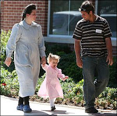

Does she look like a teenager to you? If so, you're qualified to work for the Texas CPS: Sarah, a 37-year-old (yes, that's thirty-seven) "disputed minor" parent, embraces her beautiful daughter after the child was pried from the hands of her State-employed kidnappers.
It still isn't over.
Despite a consistent string of legal defeats and a resounding loss in the court of public opinion, the State of Texas and its child-abduction auxiliary are continuing their jihad against the families of Eldorado's FLDS community.
In doing so the criminals in this matter -- the child "protection" officials who kidnapped the children, and the law enforcement officers who acted as armed accomplices -- are, with the timely help of officials in Utah, making a desperation play for public sympathy by accusing the FLDS of plotting some variety of violent revenge.
Of course, in this entire affair, one side -- the State of Texas -- has told nothing but lies, while the other -- the FLDS parents -- has told the truth, as far as we've been able to determine. And exactly the same division is apparent regarding the use, or threatened use, of violence: One side deployed APCs and sniper teams, the other surrendered without resistance.
Yet we are to believe that the Mighty Child Protectors are mortally imperiled by ... well, by what, or by whom? By such FLDS "enforcers" as "Willie the Thug" Jessop, the FLDS spokesman at YFZ Ranch, last seen politely rebuffing a group of armed CPS investigators and Sheriff's deputies who sought to search the premises without a warrant? Apparently so.
Much of the information about the putative FLDS rogue's gallery was assembled by Kirk Smith, the Sheriff of Utah's Washington County (which includes Hildale, the Utah side of the border-straddling FLDS community). Smith had previously described the FLDS as "docile." Now he considers them to be potentially dangerous. The only thing that's changed is this: The people described in that dossier are now victims of government abuse, and are therefore suspected of harboring criminal intent by the criminals who victimized them.
On the basis of yet another fact-starved and insinuation-obese document, Judge Barbara Walther -- who issued the orders leading to the YFZ raid and the child abduction -- has been given round-the-clock protection by the Texas Rangers. Granted, Walther should be the subject of constant police attention -- but as an inmate, not a judge.
The CPS and its purulent little handmaiden, Judge Walther, were bench-slapped by the state 3rd Circuit Court of Appeals, and then flattened by the state Supreme Court, both of which ruled that there was insufficient evidence to justify the seizure of more than 400 children from the YFZ Ranch.
The state High Court ordered Walther to return the abducted children to their parents. Her dilatory response to that order -- she needlessly forced the families to wait an additional weekend for the reunion -- was apparently designed to extract an agreement from the parents to live under a form of house arrest, subject to unannounced visits by the CPS. This was not only self-serving, dishonest, corrupt, and vindictive; it also displayed ill-disguised contempt for the state Supreme Court.
A decision yesterday by District Judge Martha Tanner kept the CPS's losing streak alive: Tanner granted Joseph and Lori Jessop a restraining order against the child-snatching Buttinskis. Tanner also reaffirmed an earlier order granting the Jessops custody over their children.


During Monday's hearing, CPS counsel Frank King whined for a change of venue to ... guess where? That's right: Barbara Walthers' courtroom, the only one in which the kidnappers have enjoyed any success.
Tanner wasn't having any of it, and her comments from the bench suggested that she's had a surfeit of the CPS's [insert sibilant slang term for fecal material].
"I am not going to allow CPS or any other agency to interfere with parents in this state," declared Judge Tanner, at the risk of inspiring the tiniest tremor of respect for at least one representative of the judicial branch.
Undeterred, the Texas attorney general's office has announced its intention to file an amended petition with the 4th Court of Appeals, in the hope -- once again -- of getting the Keate case in front of Barbara Walther once again. This, despite the fact the 4th Court already denied an earlier request of that sort on May 22nd.
I'm tempted to call this a uniquely precise exercise in judge-shopping, but I'm not sure that expression fits. The CPS isn't shopping the case around in search of a judge who's in the tank for them; they've found the judge they want -- one with a background in the totalitarian practice of "family law," one willing to ignore every principle of due process and defy every canon of judicial ethics in order to facilitate the CPS's assault on the FLDS community.
The melodramatic touch of assigning police protection to Walther, lest she fall by the hand of an FLDS "enforcer," is a transparent PR ploy, of course. But given the way the CPS has made her the indispensable judge, I'm cynical enough to wonder if the agency wouldn't welcome, or even provoke, an incident of some kind involving Walther, if only to overturn the game board and given them a chance to start over.

It must be said that the tenebrous world of Mormon Fundamentalism is inhabited by dangerous people, some of whom are deadly serious about the early Mormon doctrine of "blood atonement." This element of the subculture was capably explored in Jon Krakauer's chilling book Under the Banner of Heaven. Many other Mormon offshoots eschew the teaching and practice of that punitive doctrine. Prior to the ascent of Warren Jeffs as its prophet, the FLDS sect seemed to be less militant than some of its kindred, but this changed dramatically under his whimsical and dictatorial rule.
Many accounts of life in the FLDS -- such as the recently published memoir Escape, written by FLDS defector Carolyn Jessop -- plausibly depict the church as insular and suffocatingly authoritarian. But it is all but impossible to believe that the people in charge of it would be so irrationally violent as to attack a judge, even one as richly deserving of humiliation as Barbara Walther.
Carolyn Jessop was "married" as a "plural wife" to Merrill Jessop, the Bishop of the YFZ Ranch. His chief contribution to the present story was to order those living in the ranch to cooperate peacefully with the people who invaded their home and eventually kidnapped their children.
Once again, this is hardly the behavior of someone prepared to attack a judge.
To get a substantial sense of who threatens whom in this matter, it's useful to revisit the initial raids as they're described in the habeas corpus petition (.pdf) filed on behalf of the Keates and other FLDS parents whose children were seized from them at gunpoint.
In his sworn testimony, LeLand Keate describes how FLDS men -- "unarmed and praying" -- were "surrounded by armed and nervous law enforcement personnel" on the grounds outside the temple, the central edifice of the FLDS settlement.
An APC was used to force the unarmed men aside so that the temple, a sacred site to the FLDS, could be searched. Keate "saw some of the officers with tears in their eyes, a State trooper crying and some officers even put their weapons down," continues the account.
According to another account provided in the petition, as "the men went down on their knees and started to pray" in front of their temple, a witness "heard law enforcement officials cock their weapons."
Think what one will of the beliefs and practices of the FLDS men in that situation, it's clear that the only "threat" they represented to those who invaded their home was the possibility that their helplessness would leave at least some of the assailants paralyzed with shame.
Unfortunately, most of those assigned to attack the FLDS were better-suited for the mission. Later that same evening, while the Keate family was kneeling in prayer, "two State police officers and CPS officials" knocked on the door. When Keate answered, the officials asked "if he knew what was going to happen and he replied [that] based on what he had seen and been told ... they were going to take his family from him."
The intruders then rounded up the Keate children, including their five-year-old son, who was dragged away while screaming, "You don't take me from my mother!" Keate's wife was taken with the children to a local coliseum. When she asked to speak with an attorney, she was told "she did not deserve an attorney until she was 18 years old" -- a compound lie, since it included the assumption that the adult mother was a "contested minor."
When Mrs. Keate produced her driver's license, CPS officials told her it was a fake. When she and her children were relocated a few days later, Keate discovered that CPS had stolen the license from her luggage.
The experience of the Rulon Keate family -- which lived next to LeLand Keate's family in the ranch -- was very similar. The family was singing hymns together as part of a study and worship class when armed men knocked on the door.

"We know you're in there," one of them bellowed. "We'll break down your door." Upon answering the door Keate was told that the visitors -- Texas Rangers and other unidentified "armed men" -- had a warrant to search the home. Rulon asked to see the warrant. He was told the raiding party didn't have it in their possession -- which means they had no legal right to force their way into the home. Within a few minutes the invaders had gathered the children and herded them onto a bus.
These accounts are bound by thematic thread -- the arrogant, lawless violence of the CPS and its hired muscle in dealing with a community of helpless eccentrics with neither the means nor the intent to strike back.
And now we're invited to have pity for the bullies because they've lost every legal round, save those played in their home court, the one presided over by Judge Walther.
As noted above, this affair is far from over. Armed with as much money as it can extort from the taxpayers, the Texas CPS is entrenching itself for a war of attrition. And reinforcements are on their way.
Legal officials from four states (Utah, Nevada, Arizona, and Texas) recently gathered in Las Vegas -- the world's leading producer of instant, disposable marriages -- to work out a collaborative arrangement to go after FLDS polygamists. That effort will build on the documents illegally seized during the FLDS raid. And it will almost certainly result in the tragic -- albeit, for some people, lucrative -- displacement of tens of thousands of FLDS children throughout the region.
Hence the importance of "re-branding" the FLDS as a domestic terrorist group of sorts. And in this connection it's interesting to see that two memoirs from FLDS defectors published just in time for the YFZ raid -- Carolyn Jessop's Escape, and Jessica Wall's Stolen Innocence -- will be made into motion pictures, most likely of the made-for-TV variety to be put into heavy rotation on Lifetime, aka "television for women who hate men."
 On Sale Now!
On Sale Now!Dum spiro, pugno!
30 comments:
When I saw Governor Rick Hairdo on teevee, bemoaning the tragic fire at his mansion, I couldn't help thinking that it was divine retribution for the manifold sins and wickedness of his CPS.
Between Governor Hairdo and the simian-visaged non-entity who's impersonating the president, it's enough to make Texas look like a dumping ground for losers and retards.
And I say that sadly, as a born Texan.
Another brilliant column, Will. I read a lot and I'm going to just say it. You are the best writer out there. Bar none.
As always, thank you for remaining vigilant in regards to this horrible story.
As a follower of Christ, I am deeply ashamed of my country and the organized church and it lacks of regard for all of this.
Conan the Cimmerian
In Congress and the Supreme Court, a charade similar to the Texas CFS's defiance of the court is playing out, in regard to Guantánamo detainees:
------------
WASHINGTON - The Supreme Court ruled Thursday that foreign terrorism suspects held at Guantanamo Bay have rights under the Constitution to challenge their detention in U.S. civilian courts.
In its third rebuke of the Bush administration's treatment of prisoners, the court ruled 5-4 that the government is violating the rights of prisoners being held indefinitely and without charges at the U.S. naval base in Cuba. The court specifically struck down a provision of the Military Commissions Act of 2006 that denies Guantanamo detainees the right to file petition of habeas corpus.
Justice Anthony Kennedy, writing for the court, said, "The laws and Constitution are designed to survive, and remain in force, in extraordinary times."
The court has ruled twice previously that people held at Guantanamo without charges can go into civilian courts to ask that the government justify their continued detention. Each time, the administration and Congress, then controlled by Republicans, changed the law to try to close the courthouse doors to the detainees.
http://news.yahoo.com/s/ap/20080612/ap_on_go_su_co/scotus_guantanamo
------------
As the article notes, Congress and the executive already have stiffarmed the court twice to "close the courthouse doors to the detainees." Why not go for three?
Under anachronistic "hard fascism," Mussolini might have closed down the court, or have had his brownshirts set loose a cage of rats inside to disrupt it.
But "soft fascism" probably means running out the clock until a more compliant justice can be slotted in after a retirement. After all, they've got all the time in the world. So they presume.
So the same authorities, who burned Waco to the ground, are now preaching us about who is likely to use violence. They take the limit of their own field of vision for the limits of the world.
Apparently, the agencies that raided the YFZ ranch had no idea how to proceed with their demands so they used the same play out of their playbook that was used in Waco.
It is obvious now why legal proofs were not necessary. Simply take their kids, use intimidating force and humiliate them, until someone snaps; then hell will brake loose, and that will become the reason that will justify the destruction of the Church.
According to the record from the parents, on Wednesday, April 09, 2008 8:00:00 AM
“CPS workers come and inform us they are going to do medical exams on the children; the children must be stripped. We answer them, No way! “
At that point, the authorities had already decided to separate the children. So for what other reason they were offending the parents but to force them to snap?
The melodramatic touch of assigning police protection to Walther, lest she fall by the hand of an FLDS "enforcer," is a transparent PR ploy, of course. But given the way the CPS has made her the indispensable judge, I'm cynical enough to wonder if the agency wouldn't welcome, or even provoke, an incident of some kind involving Walther, if only to overturn the game board and given them a chance to start over.
Exactly, Will! It's almost amusing how those enjoying the perquisites of illicit power, as servants of State-sponsored evil, seldom ever realize just how disposable they are, that they are nothing more than individual cogs in a vast, impersonal machine made up of an infinite number of such easily replaceable cogs, however momentarily important they believe they are. (Ernst Roehm, among others, discovered this too late as he met death at the hands of his fellow brownshirts on Adolf Hitler's orders. Further east inside the USSR, Mikhail Kirov, Genrikh Yagoda, and Lavrenti Beria --again, among many thousands of other useful idiot thugscum-- met the same type of end at Josef Stalin's hands, all no doubt thinking "but you can't do that to ME! Don't you know who I AM??!! I've been a loyal servant of the people! You're making a big MISTAKE!") Judge Walther is probably too stupid and arrogant to realize that she, too, is only a minor cog in the machine, no matter how essential she is to the current phase of the State's planned assault against only the first of many communities that make up the citizenry. As soon as she's outlived her usefulness, she too will be disposed of, whether through a contrived incident that results from her removal from the bench and/or disbarment, or through more "permanent" means, no doubt all the while thinking "but I'M LOYAL, master! How could you do this to ME?"
What's on my mind is Pastor Niemoeller. Who hath ears, let him use a Q-Tip.
Governor's mansion burns; floods where none have occured, crop failures and potential famine....
God will NOT be mocked and HE will speak louder if modern Pharoh's continue to ignore HIM
These people are part of a cult. They kick out the younger males in order to sustain some medieval polygamist society. The women are brainwashed into believing their man is ruler over all they do, all they do, and what they think.
Freedom of expression is limited by this brand of religious fundamentalism and mental preconditioning. These women are denied the equality of opportunity available to other American women.
The pattern of forcing underage girls into marriage is child rape. Who knows how many children have been victimized. Now the culprits need to be found within the community. Otherwise it's hard to believe the forced marriages are not the product of the cult system their male leaders have set up, to exploit their women and demean them into servitude. Of course children are the most vulnerable to this conditioning, so they are taught to share husbands, and be subservient to a man they must share with other women, in gross violation of Christian values of one man and one woman.
For the child molesters in charge, this system guarantees a fresh flock of victims from the obviously condom-shunning congregation.
The burden of proving their children are safe should fall to those who've fallen under the spell of their cult leaders. Otherwise, the children should be brought up in normal homes, where girls are treated with dignity and respect and boys not thrust from the community upon maturity, as presenting a source of competition for the older males' endless quest for more female slaves and childbearers.
" America " has morphed into a deranged monstrosity!!
Our teenagers are killing each other in our cities; our " culture " sinks deeper into depravity; corruption is rampant; our " government " is delusionary and quite hellbent on instigating the extinction of humanity.
It's all a crying shame!!!
What needs to be exposed is that there are contracts behind the scenes between CPS and the Fed, CPS and the Sheriff, all for performance and MONEY. CPS and CPS workers get paid huge bonuses for kidnapping kids and placing them in foster homes. These agencies are not government, they have no offices, no bonds, and no duty to the people, thus the contracts. Look up your favorite "government" entity on Dunn & Bradstreet and you will find that almost without exception they will be listed as for profit businesses...welcome to reality...Amerika
"U.S. Attorney General Michael Mukasey says military trials for suspected terrorists detained at the Guantanamo Bay prison will proceed, despite a key ruling Thursday by the U.S. Supreme Court."
http://voanews.com/english/2008-06-13-voa6.cfm
Why should Mukasey not be jailed for contempt? Or impeached? The constitution is broke.
Why should Mukasey not be jailed for contempt? Or impeached?
The better question is why won't he be jailed or impeached? Three reasons:
1. Like any other body, the executive branch of government (ANY government) is incapable of/unwilling to police itself.
2. The nation as a whole lacks the political will to bring this demon in transparent angel's garb to justice.
3. The executive branch has all the firepower at its disposal --literally-- and will not hesitate for a second to use it if the other, weaker branches of the government or "the People" (disunited, ignorant, and brainwashed as they are) choose to make trouble.
I do believe that this is the reason that impeachment proceedings against Shrubtard, Cheney, et al. have not begun in earnest. Congress is well aware that the executive branch is just emboldened enough now to declare martial law and have the lot of them thrown into Gitmo should they make any detectable move at all to exercise their constitutionally-mandated powers of check over the presidency and executive offices.
The constitution is broke.
No, the Constitution itself is in fine shape and always has been. It's "the People" and their elected "representatives" whose legal duty it is to safeguard the Constitution who are broke(n).
Responding to the idiot NAZI member of the cult of the State:
"These people are part of a cult."
And the CPS is part of the State of Texas cult
"They kick out the younger males in order to sustain some medieval polygamist society."
And the U.S. Government cult KILLS the younger males in wars
"The women are brainwashed into believing their man is ruler over all they do, all they do, and what they think."
And in YOUR Government cult, the women are brainwashed into believeing that babies are a bad burden and should all be aborted no matter WHAT age the mother is.
"Freedom of expression is limited by this brand of religious fundamentalism and mental preconditioning. These women are denied the equality of opportunity available to other American women."
YOU are the one DENYING them their right to live the way they want to live. You want them to live the way YOU live.
"The pattern of forcing underage girls into marriage is child rape."
The legal age to marry in your OWN cult (the State Cult - also known a Nazi) was 14, and is now 16.
Why does your cult get to decide what age girls get married and have babies?
"Who knows how many children have been victimized."...
Here, you admit that your NAZI cult leaders (the State) have no idea. So, your answer, indoctrinate them into our CULT by force of arms! Your cult is violent.
You complain of their cult "exploit their women and demean them into servitude"
But they don't burn people to death from other cults, and FORCE me at gun point to pay taxes on my OWN property, and FORCE my children INTO their Cult the way the State of Texas CUlt does.
"For the child molesters in charge, this system guarantees a fresh flock of victims from the obviously condom-shunning congregation."
Here again, you parrot your own cults teaching (that babies are bad) and want to use GUNS to FORCE these people to get abotions and NOT have children.
"The burden of proving their children are safe should fall to those who've fallen under the spell of their cult leaders."
You - Mr. Anonymous idiot, are the one brainwashed into the NAzi cult of the State and are the one under the spell. By what authority do you claim YOUR CULT and your disgusting beliefs (that children should be aborted and that the State should use guns to make sure people don't have too many babies?)
"Otherwise, the children should be brought up in normal homes"
Like your home? You have the balls to claim you know what is best, when you advocate limiting and destroying life?
Like it or not, CPS will be conducting followups with all the families involved, and that includes unannounced visits to YFZ.
You'd think the current prophet would be wise enough to have a "revelation" that females must be 18 to spiritually marry.
Please don't gloss over the fact that their own doctrine (more revelations to the prophet) permits FLDS to lie at whim to those outside their fellowship.
Yes, welfare fraud remains a major source of income in the polygamist community. No, they don't see anything wrong with it.
If you would like contact the State's propagandist, (aka,"Spokesman")of the CPS,
Patrick "Herr Goebbels" Crimmins you may do so at:
patrick.crimmins@dfps.state.tx.us
(512) 438-3112-Office
(512) 787-5090-Cell
Mr. Grigg, your erudition is a gift to us all. Thank you.
Could it be that the purpose of the
raid on the FLDS site was to make
way for the TTC?
http://tinyurl.com/65qcnc
Anonymous @ 11:16 -- It's not necessary for a girl to be 18 to be married in Texas. I'd vastly prefer that young women wait until at least that age to marry, and that they do so only once, but I'm not ready to rip children away from innocent people at gunpoint over free-floating suspicions that liaisons of other kinds are taking place in a given community.
The FLDS leaders at YFZ Ranch have already adjusted their marriage policies at least once to conform to a change in Texas's marriage law, which was changed for the specific purpose of targeting that community. And after the Texas Supreme Court decision, the FLDS leaders in Texas promised that they'd revise their practices once again. Their word has been far better than that of the Texas CPS.
Welfare fraud of all varieties is a huge problem, best dealt with by abolishing welfare. This would go a long way toward solving the problems attendant to unregulated immigration, too.
Throughout these postings and even in Will's excellent article, no one asked the important question: If the men in the FLDS group were accused of sexual abuse, why weren't they arrested and taken away? Why take the mothers and the children?
Anonymous said, "...the children should be brought up in normal homes, where girls are treated with dignity and respect and boys not thrust from the community upon maturity..."
Um, where are those homes? Are they in America? I can't tell, because when I reached maturity, I left home to make my own life. What's so bad about an adult being responsible for themselves? Where is this magical place where all the girls are pure and virgin until marriage as an adult? Las Vegas? Jerry or Maury's worlds?
The statists are here save the Christians and our children from evil. What do we need Jesus for anymore? Or wisdom for that matter? Its not like we'll have a choice when we need them.
Welfare fraud?
LOL!...... (wiping tears from eyes)
Are you kidding me? Really now. Charges of welfare fraud are brought down upon this group, rightly or wrongly, and the amount of manpower and resources.. i.e. stolen "loot" in order to fund the tentacles of this beast to the tune of millions and they have the temerity to trot out that old corpse!
This is the equivalent of spending a dollar to save a dime and reminds me of the US Mint complaining about how much money they were "losing" a year by making copper pennies while the equivalent amount was being "blown" away in the sands of Iraq in hours. You have to be insane not to see how ironic that is.
Then again, Bush, Chief Lunatic In Charge, has since 2003 reminded me of that kook president in the "Dead Zone".
....."The missiles are flying. Hallelujah, Hallelujah!"
And that, dear friends, is reason enough to be worried.
Have you read the letter that Willie Jessop sent to President Bush? Excerpts were in an article by CNN.
http://edition.cnn.com/2008/CRIME/05/12/ flds.letter/index.html
"Mr. President, it does not require a foreign country to commit terrorist acts on American soil," the letter says. "Terrorist acts can be committed by federal, local, and private entities that are operating under the guise of 'protecting the public."
*Take out the space between 12/ & flds.letter (only way to make the whole link show up)
The FLDS have a website that has comments about our side of a lot of questions about us, and recent events. Please read all of the articles.
http://www.truthwillprevail.org/
-- a FLDS resident in CCA
Please allow me to introduce myself.
I am a man who works for the state.
I’ve been around for a long, long time
Filled many a man’s heart with hate.
I was around when Judge Roy Bean
Built the courthouse behind his saloon.
“Hang ‘em, first, try ‘em, later!”
Said the Judge as he turned to his spittoon.
Please to meet you!
Hope you guess my name
Is what’s troubling you
The nature of
Stuck around the penitentiary
When Old Sparky was jacked into the wall
Three Hundred Sixty One final debts paid
Before I started swabbin’ arms with alcohol.
I held the flank of the ATF tank
When the children screams stopped
And all Waco stank
Please to meet you!
Hope you guess my name.
Ah, what’s puzzling you
Is the nature of my game.
I watched with glee on my big screen TV
As the talking heads
At the gruesome scene
Asked “Who killed the Davidians?”
When, after all, it was you and me.
Let me please introduce myself
I am a man who works for the state.
I provide you security
When I take all you freedom away.
Just as every cop is a criminal
in all the Lone Star State
As heads is tails
Just call me Government
cause I’m in need of some restraint.
I find this so difficult to resolve in my heart in a country built on The Constitution that the Framers/Founding Fathers wrote. Where whether you like it or not, people have a right to live their lives as they see fit as outlined in the Constitution and the Bill of Rights. How can they do this??! Does it really have to do with FLDS property being right in line of where the NAFTA super highway is to be built??!
Oh, and btw, I am a woman and I don't buy Texas' crap on this for one minute. No matter how many television shows they inspire. *disgusted* I won't be watching their commercial 'programming' anyway.
Thanks for the blog you shared.
I really like that picture. Resembles one I spread around under the title of "37_YO_Texas_Teenager"!
;)
kbp
There is OTHER TERROR going on in Texas with regard to STEALING CHILDREN. Check out www.UpAgainstEvil.com to be SHOCKED. Please HELP this woman.
If you want to see HIDDEN ABUSE in Texas, please go to www.UpAgainstEvil.com and HELP!
Absolutely not! I refuse to have any pity for bullies after what many of them have done to me. The only thing that pity does for them is encourage them to continue terrorizing innocent people. I should know as I experienced it.
But I forgive forgive bullies if they totally mean that they're sorry, if they make up for their antagonism, and if they promise never ever again to bully.
Post a Comment